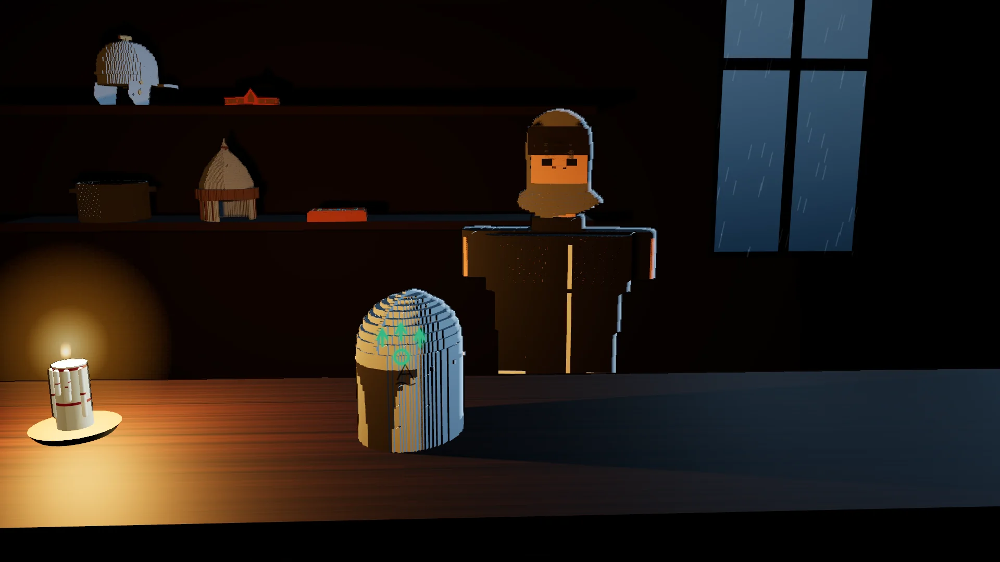

Board · 5d
Day the SeventhBought in · i
Helm, “lightly used”
brought up this morning by Wenna, of the Gilt Weasels; still cold from the stair
What it tells asked, then not
Mark of the Drowned Forge. Its smiths sank with it, so nobody makes these any more.
by the loupe
⅒ dayno wear
A mild curse: the wearer agrees with whoever spoke last.
by the curse candle
¼ daya third of the stub
Heft
by the scales
⅒ dayno wear
The lining
by the knife
⅛ daydulls the blade a notch
Who wore it last
by the bone dice · two throws left
⅓ dayone throw
Bot · helmii
Worth, by my blot drag the mark to offer
open question M8
The column
Her first ask40
Offers made3
Paid— —
touched the visor twice when I said the Forge was drowned
Margin
she40
glanced at the door
I8
laughed too loudly
she30
I12
she20
“it was my uncle's”
I14← moving
strike the lastlet her walk
open question M7
open question M6